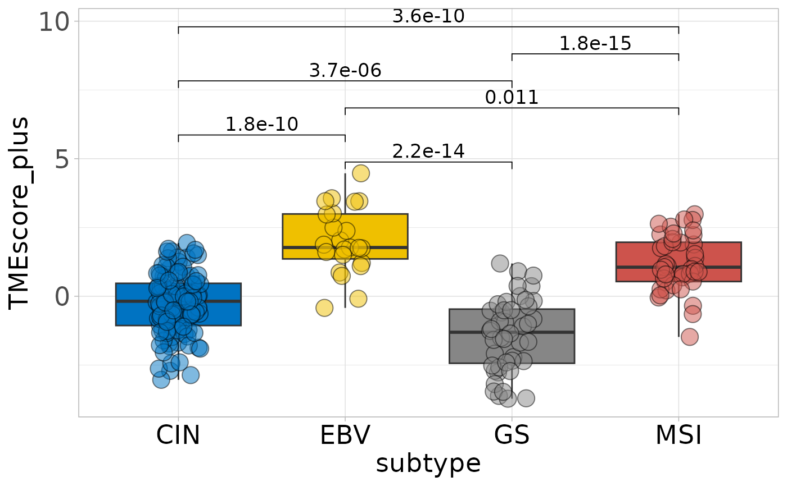
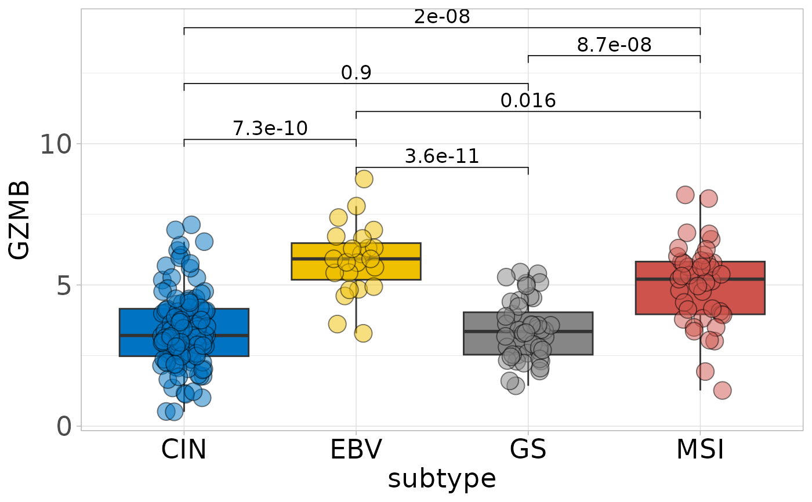

Generates multiple box plots for specified features (signatures) across groups in the input data. Supports customization of plot appearance, output path, statistical annotation, and compatibility with Seurat objects. Plots are saved to the specified directory or a default folder.
Usage
sig_box_batch(
input,
vars,
groups,
pattern_vars = FALSE,
path = NULL,
index = 0,
angle_x_text = 0,
hjust = 0.5,
palette = "jama",
cols = NULL,
jitter = FALSE,
point_size = 5,
size_of_font = 8,
size_of_pvalue = 4.5,
show_pvalue = TRUE,
return_stat_res = FALSE,
assay = NULL,
slot = "scale.data",
scale = FALSE,
height = 5,
width = 3.5,
fig_type = "pdf",
max_count_feas = 30
)Arguments
- input
Data frame or Seurat object containing the data for analysis.
- vars
Character vector. Features or variables to analyze. When `pattern_vars = TRUE`, these are treated as regular expression patterns.
- groups
Character vector. Grouping variable(s) for comparison.
- pattern_vars
Logical indicating whether to treat `vars` as regular expression patterns for matching column names. Default is `FALSE`.
- path
Character string or `NULL`. Directory to save plots. If `NULL`, uses default `"1-sig-box-batch"`.
- index
Integer. Starting index for plot filenames. Default is `0`.
- angle_x_text
Numeric. Angle of x-axis labels in degrees. Default is `0`.
- hjust
Numeric. Horizontal justification of x-axis labels. Default is `0.5`.
- palette
Character. Color palette for plots. Default is `"jama"`.
- cols
Character vector or `NULL`. Custom colors for plot elements.
- jitter
Logical indicating whether to add jittered points. Default is `FALSE`.
- point_size
Numeric. Size of points. Default is `5`.
- size_of_font
Numeric. Base font size. Default is `8`.
- size_of_pvalue
Numeric. Size of p-value text. Default is `4.5`.
- show_pvalue
Logical indicating whether to display p-values. Default is `TRUE`.
- return_stat_res
Logical indicating whether to return statistical results instead of saving plots. Default is `FALSE`.
- assay
Character string or `NULL`. Assay type for Seurat objects.
- slot
Character. Data slot for Seurat objects. Default is `"scale.data"`.
- scale
Logical indicating whether to scale data before analysis. Default is `FALSE`.
- height
Numeric. Height of plots in inches. Default is `5`.
- width
Numeric. Width of plots in inches. Default is `3.5`.
- fig_type
Character. File format for plots (e.g., `"pdf"`, `"png"`). Default is `"pdf"`.
- max_count_feas
Integer. Maximum number of features to analyze when `pattern_vars = TRUE`. If matched variables exceed this limit, only the first `max_count_feas` features are used. Default is `30`.
Value
If `return_stat_res = TRUE`, returns a data frame of statistical results; otherwise, invisibly returns the path to saved plots.
Examples
tcga_stad_pdata <- load_data("tcga_stad_pdata")
sig_box_batch(
input = tcga_stad_pdata,
vars = c("TMEscore_plus", "GZMB"),
groups = "subtype",
jitter = TRUE,
palette = "jco",
path = tempdir()
)
#> ℹ Processing feature: "TMEscore_plus"
#> # A tibble: 6 × 8
#> .y. group1 group2 p p.adj p.format p.signif method
#> <chr> <chr> <chr> <dbl> <dbl> <chr> <chr> <chr>
#> 1 signature CIN EBV 1.81e-10 7.30e-10 1.8e-10 **** Wilcoxon
#> 2 signature CIN GS 3.67e- 6 7.3 e- 6 3.7e-06 **** Wilcoxon
#> 3 signature EBV GS 2.17e-14 1.10e-13 2.2e-14 **** Wilcoxon
#> 4 signature CIN MSI 3.57e-10 1.10e- 9 3.6e-10 **** Wilcoxon
#> 5 signature EBV MSI 1.10e- 2 1.1 e- 2 0.011 * Wilcoxon
#> 6 signature GS MSI 1.83e-15 1.10e-14 1.8e-15 **** Wilcoxon

#> ℹ Processing feature: "GZMB"
#> # A tibble: 6 × 8
#> .y. group1 group2 p p.adj p.format p.signif method
#> <chr> <chr> <chr> <dbl> <dbl> <chr> <chr> <chr>
#> 1 signature CIN EBV 7.28e-10 0.0000000036 7.3e-10 **** Wilcoxon
#> 2 signature CIN GS 8.98e- 1 0.9 0.898 ns Wilcoxon
#> 3 signature EBV GS 3.62e-11 0.00000000022 3.6e-11 **** Wilcoxon
#> 4 signature CIN MSI 2.04e- 8 0.000000082 2.0e-08 **** Wilcoxon
#> 5 signature EBV MSI 1.59e- 2 0.032 0.016 * Wilcoxon
#> 6 signature GS MSI 8.71e- 8 0.00000026 8.7e-08 **** Wilcoxon

#> ✔ Batch processing complete. Plots saved to: /tmp/RtmpCCXmA4